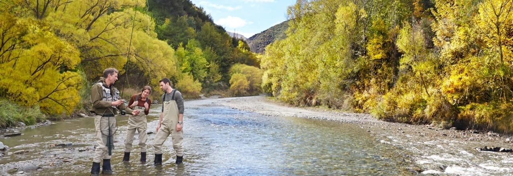
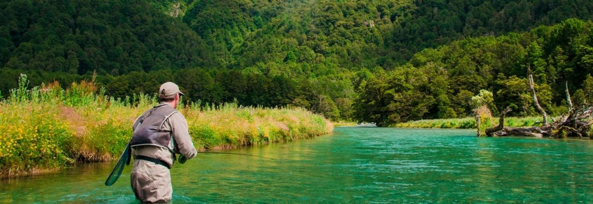
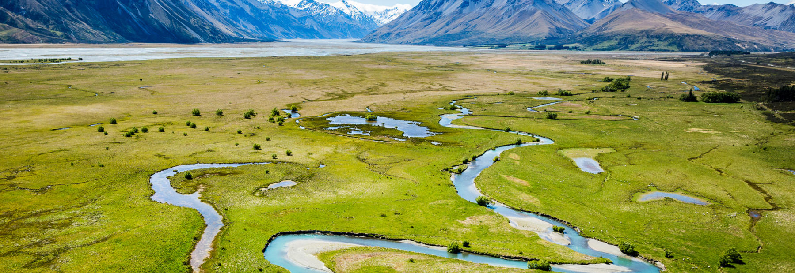

Anglers from all over the world look to New Zealand as the mecca of angling - the world's best wild trout fishery.
Fly fishing in New Zealand is fantastic every month of the year, not to mention its spectacular scenery too.

NORTH ISLAND FLYFISHING
The North Island is a must see destination for fly fishing with its plentiful supply of rainbow
trout, colossal Lake Taupo and endless greenery.

SOUTH ISLAND FLY FISHING
Take your pick of amazing fly fishing destinations in the South Island.
All accessible and within close proximity of each other.

Helicopter Fly Fishing
In New Zealand helicopters are sometimes referred to as 'magic carpets'
and for anglers, that's exactly what they are.
Marine Watching
There's no need to wander around with your nose
struck in a guide book.Take marine adventure to the next
level with a local walking guide!!